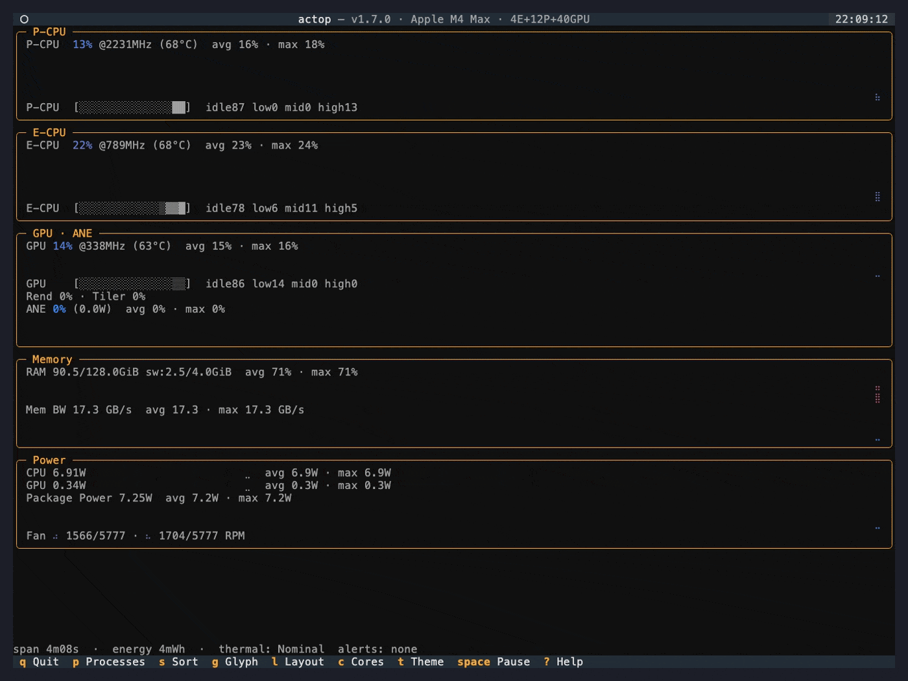

Watch your Apple Silicon Mac the way it actually works — sudoless, in-process, for M1–M4.

actop reads Apple Silicon power, frequency, and residency metrics directly from
IOReport via Python ctypes — the same library powermetrics uses,
minus the sudo, subprocesses, and temp files.
Per-cluster and per-core utilization, DVFS P-state frequency, and power for the P-CPU, E-CPU, GPU, and Neural Engine.
Live GB/s against the SoC's peak, with a bandwidth-saturation alert and a MEM-BOUND indicator.
Network and disk throughput as mirrored in-over-out charts sharing a zero axis, sourced from native getifaddrs and IOKit counters — no sudo, no subprocesses.
CPU/GPU die temperatures from the Apple SMC and the macOS thermal state, with a THROTTLING indicator.
A watt-attributed PWR column — per-process power and energy attribution, unique among the sudoless *top tools.
Monitor / Profiler with to_pandas() — instrument your own LLM / MLX / CoreML runs from Python.
16 built-in M1–M4 profiles with reference wattage and bandwidth for stable, cross-session chart scaling.
8 built-in Textual themes — nord, dracula, monokai, tokyo-night, and more — cycle live with t or choose at launch with --theme. Independent of the accessibility chart palettes.
Then run actop.
brew tap binlecode/actop
brew install binlecode/actop/actopuv tool install \
git+https://github.com/binlecode/actop.gitpip install \
git+https://github.com/binlecode/actop.gitWrap any workload to get a pandas frame of power, frequency, residency, and cumulative session energy — no TUI needed.
from actop import Profiler
with Profiler() as p:
run_my_inference() # your workload
df = p.to_pandas() # rows = samples; cols = power/freq/residency/energyFollows the Unix *top lineage: the sudoless, programmable, Python-native monitor for Apple Silicon.